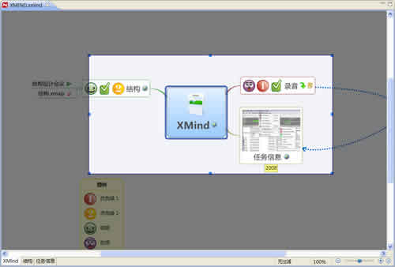
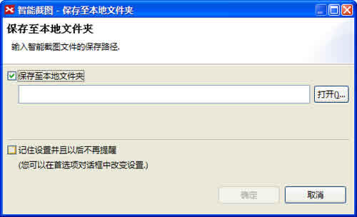
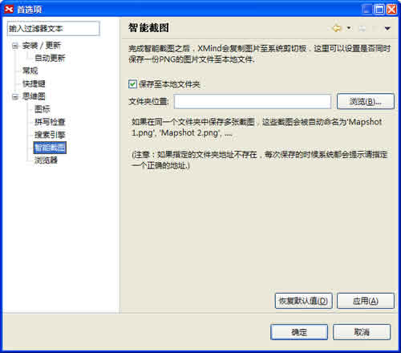

使用智能截图，您可以及时地与他人分享您的思维图的全部或者一个部分。方法如下：
按照下列步骤进行智能截图：
- 打开思维图；
- 您有两种方法开始智能截图：
- 使用快捷键"F7"。
- 或者在菜单栏选择"工具 > 智能截图"。
- 按住鼠标左键拖动截图区；
- 被选中的区域会在屏幕上高亮显示；
- 拖动截图区的边角选择点改变截图区域大小；
- 双击最后确定的选择区域，XMind会自动复制此区域至您的桌面。*


注意：
- 被保存的图片格式是JPG。
- 您可以在"编辑 > 首选项 > 思维图 > 智能截图"中设置自动保存的位置。
- *您还可以设置另存一张PNG的图片至指定的文件夹。

您可能还对下列内容感兴趣：